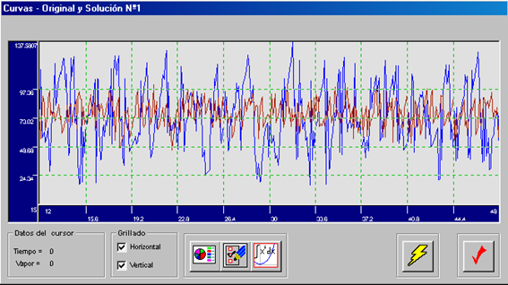
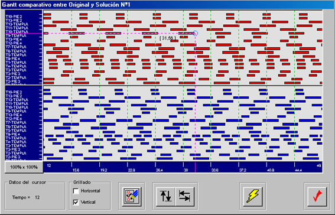
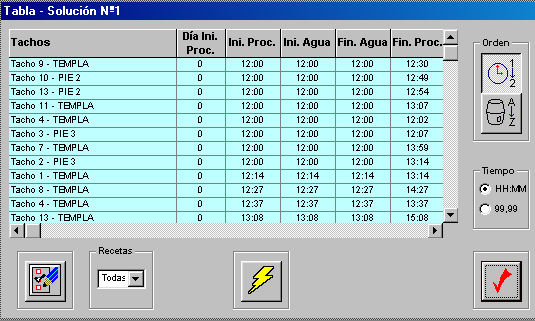

This project was designed to optimize and sequence industrial operations in environments where resource usage, timing, and execution order directly affect performance. It combines logical rules, mathematical optimization, and visual outputs into a workflow that supports planning and operational decision-making.
Featured Workflow Case Study
Industrial Process Optimization & Scheduling System
Optimization system designed to sequence operations, evaluate scheduling scenarios, and improve resource usage visibility in industrial environments.
Built for complex production environments with constrained resources and recurring scheduling decisions.
Based on a real industrial optimization system developed for production environments.
Project Overview
Project Overview
The resulting system helps evaluate scheduling scenarios, balance resource consumption, and generate outputs that improve visibility into plant execution dynamics.
Business Challenge
Business Challenge
Industrial operations often involve discontinuous processes, limited resources, and complex sequencing constraints. Managing those conditions manually makes it harder to anticipate bottlenecks, balance consumption, and compare execution scenarios efficiently.
Optimization Workflow
Optimization Workflow
The solution sequences operations, evaluates scheduling alternatives, analyzes resource consumption patterns, and generates planning-oriented outputs for operational review.
Model inputs
Define process variables and operating conditions
Sequence operations
Build execution order under plant constraints
Evaluate scenarios
Compare alternative scheduling possibilities
Optimize usage
Balance resource consumption over time
Generate outputs
Produce charts, timelines, and tables
Support decisions
Guide operational planning with visual evidence

Scheduling Logic
Scheduling & Resource Logic
The system integrates sequencing logic with optimization criteria to evaluate how timing decisions affect resource consumption and execution feasibility. This supports more structured analysis of operational trade-offs.
Visual Outputs
Visual Outputs
The workflow generates combined visual outputs such as consumption curves, scheduling views, and structured timing tables that help translate optimization results into actionable planning information.


Business Value
Business Value
- Improves visibility into operational sequencing
- Supports better resource usage decisions
- Helps compare execution scenarios more effectively
- Enables more structured planning in complex environments
Technologies
Technologies
Next Step
Optimization Opportunity
Looking to optimize complex industrial workflows?
Let’s discuss how this type of optimization workflow can improve planning visibility, resource usage, and execution efficiency.
No commitment. We’ll review your process and identify optimization opportunities.